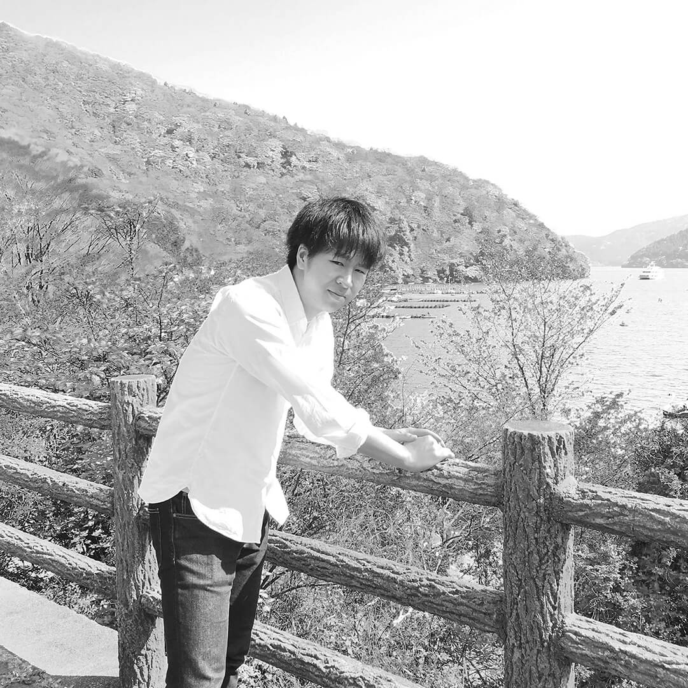
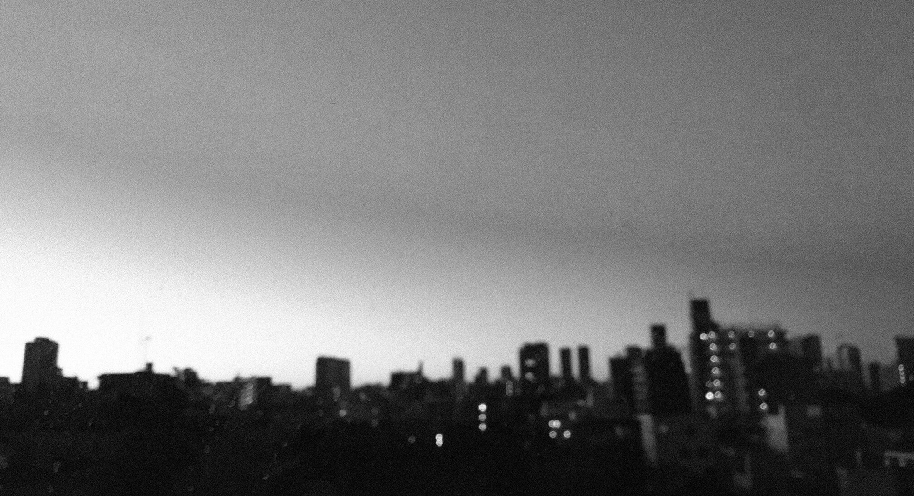
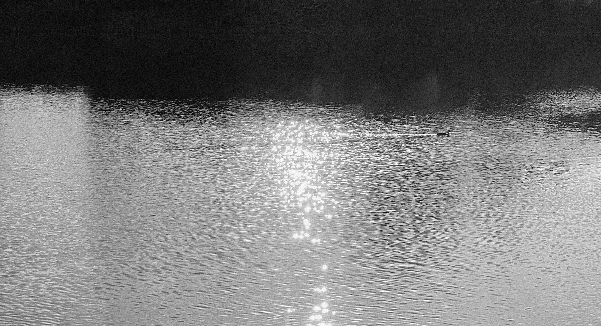

About
Facing your possibilities
with design.
デザインを通して可能性と向き合う。
Designer

Takashi Ando
アンドウ タカシ
2019年12月よりテックエキスパートのデザイン専攻コースに通い始め、2020年3月に卒業。
濃密な3ヶ月を通して気づいたことは、デザインを形にするには対象と向き合うことが大切ということ。
向き合うことでしか本当の良さを形にできないということに気づきました。
この経験の中でWebデザインやコーディングの面白さを知り、また自分が好きなこと、自分に適していることにも気付くことができました。
そうして、私はWebデザイナーとして活躍していくことを決めました。

Vision
Web観点を超えたブランディングを手助けできる存在になりたい。
そのために、まずは身近からプロのWebデザイナーとして信頼される存在になることを目指しています。
人と、デザインと向き合い、まだ気づいていない“いいところ”を伝えていきたい。
私は目の前にいる人、いまだスポットライトの当たらないモノが自分でも気づかない“いいところ”を伝えられる存在でありたいと考えています。
